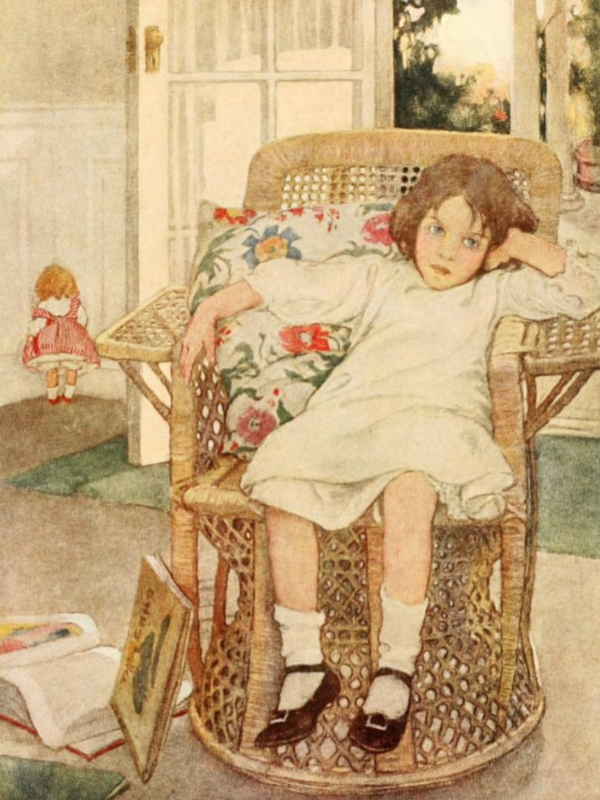

R-Controlled Syllables Video, Part 1/2
In this lesson, you will learn the definition of the r-controlled syllable and write some words that contain this type of syllable.
In this lesson, you will learn the definition of the r-controlled syllable and write some words that contain this type of syllable.
In this lesson, you will continue to learn about r-controlled syllables.
Use pages 14-16 of the linked printable to recite some phonogram sounds as well as read some words with closed, open, consonant le, and r-controlled syllables.

Find 19 words with an r-controlled syllable type in the linked file.